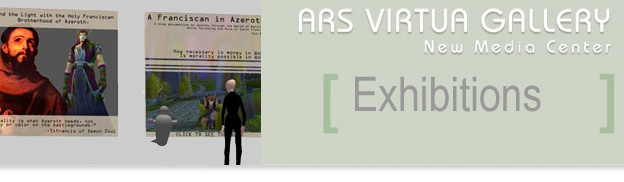

To visit Ars Virtua simply create a free account in Second Life and run the current client. Once you have this properly installed follow one of these links: (Kligerman AVAIR / permanent collection) (Streaming Museum) (new exhibits)